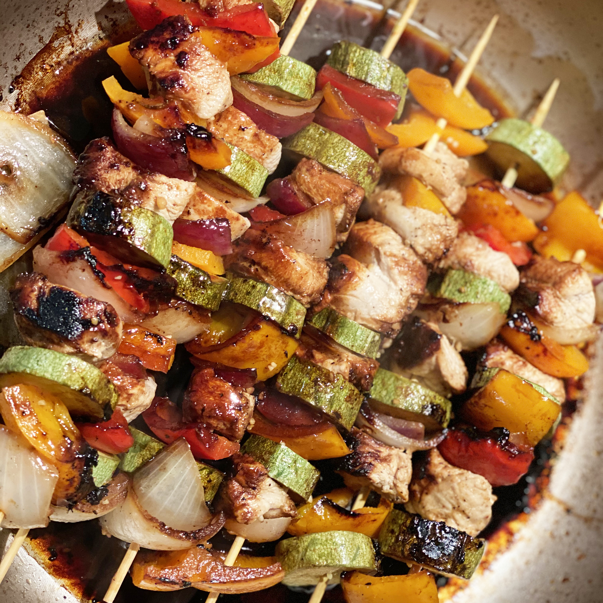

Honey Chicken Kabobs

Description
Chicken kabobs marinated in a sweet and sour sauce are a fun alternative to usual barbecue fare. The honey-soy mixture does double duty as a marinade and a basting sauce, adding delicious flavor to every bite of juicy chicken. Use fresh mushrooms, cherry tomatoes, or other veggies and marinate overnight if desired. Don't have a grill? These can be cooked under your broiler.
Ingredients
- Chicken
- Onion
- Bell Peppers
- Garlic
- Skewers
Steps
-
Make the Marinade
- Whisk together the honey, soy sauce, oil, and black pepper in a large bowl. Transfer ¼-cup of the marinade to a small jar and seal.
-
Marinate the Ingredients
- Pour the batter in ¼ cup portions onto a lightly oiled pan or griddle over medium-high heat. Cook for a few minutes, flip with a spatula, and cook for another few minutes (or until each side is golden brown).
-
Assemble the Kebabs
- Drain the chicken and vegetables, then discard the marinade. Thread the ingredients onto the skewers.
-
Grill the Kebabs
- Grill the skewers on a lightly oiled, preheated grate. Cook, turning frequently and brushing with reserved marinade, until the chicken is fully cooked and no longer pink in the center.